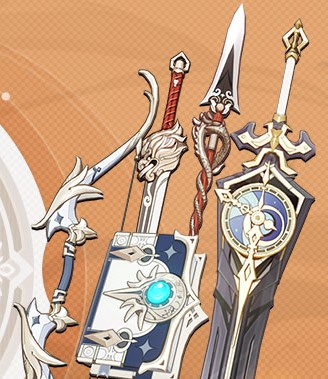
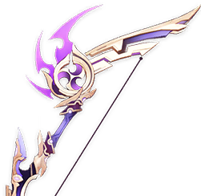
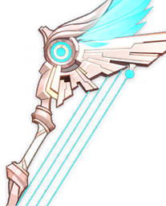
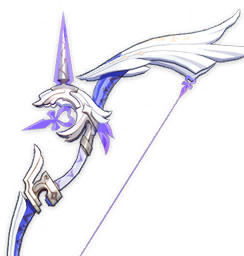
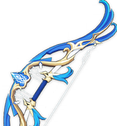
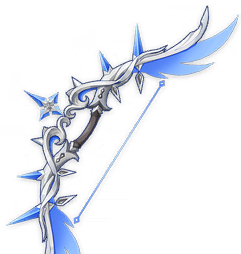

Armas
Las armas en Genshin Impact son equipamientos que ayudan al jugador durante sus misiones al infligir daño a los enemigos.
Tipos de armas
Rareza
Todas las armas tienen una rareza que va desde 1 estrella hasta 5 estrellas. Las armas con mayor rareza tienen un mayor crecimiento en sus estadísticas que las armas con menor rareza, pero son más difíciles de obtener.
Obtención
- Armas de 5 estrellas: Sólo pueden obtenerse a través de Deseos.
- Armas de 4 estrellas: Pueden obtenerse a través de Deseos y algunas pueden crearse a través de la Forja.
- Armas de 3 estrellas, 2 estrellas y 1 estrella: Pueden ser dejadas como recompensa al derrotar a algunos jefes, u obtenerse de los cofres en el mundo abierto.
Arcos

Agitador del Relámpago
- Rareza: ⭐⭐⭐⭐⭐
- Stat básica: ATQ Base 46.0
- Stat secundaria: 14.4 Daño CRIT%
- Obtención: Gachapón

Alas Celestiales
- Rareza: ⭐⭐⭐⭐⭐
- Stat básica: ATQ Base 48.0
- Stat secundaria: 4.8 Prob. CRIT%
- Obtención: Gachapón

Arco de Amos
- Rareza: ⭐⭐⭐⭐⭐
- Stat básica: ATQ Base 46.0
- Stat secundaria: 10.8 ATQ%
- Obtención: Gachapón

Elegía del Fin
- Rareza: ⭐⭐⭐⭐⭐
- Stat básica: ATQ Base 46.0
- Stat secundaria: 12.0 Recarga de Energía%
- Obtención: Gachapón

Estrella Invernal
- Rareza: ⭐⭐⭐⭐⭐
- Stat básica: ATQ Base 46.0
- Stat secundaria: 7.2 Prob. CRIT%
- Obtención: Gachapón